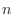

Next: EnergyData.max_nlogn_grid_cells maximum Up: The EnergyData class: objective Previous: EnergyData.nonbonded_sel_atoms control Contents Index
Before calculating dynamic non-bonded restraints, MODELLER determines which of the several routines is most appropriate and efficient for calculating the non-bonded atom pairs list. The user can use this variable to influence the selection, of either a straightforward search or a cell-based algorithm which has dependency of CPU time versus size . The latter algorithm is used when the maximal difference in residue indices of the atoms in the current dynamic restraints is larger than EnergyData.nlogn_use, EnergyData.contact_shell is less than 8Å, the necessary number of cells is less than EnergyData.max_nlogn_grid_cells and fits in an integer without overflow, and there is sufficient system memory to store the cells. The default value is 15.